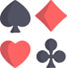
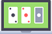
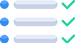

Every player who visits our website asks himself the question – "How do you test NEW online casinos? The answer is clear and it is obvious. These criteria are crucial in evaluations:
The license that any reputable online casino in UK is supposed to have;
Player ratings;
What bonuses can the casino offer online;
Best ways to deposit and withdraw;
Best software providers;
How big are the odds of winning?
Top 5 Best NEW Online Casinos Games with Welcome Bonus:
Thanks to the huge competition in the casino market, gambling is really popular now. Today, every player can satisfy their need, gamble in the virtual playhouse and don't leave the house in the process. New online casinos offers the wide range of different games. Almost every one of them has pretty common casino games, such as poker, slot machines, video slots, online – roulette and many others for your taste.
The total number of casino sites is increasing on the Internet, and it is now very difficult to choose the best new casino in UK suitable for you. It is worth noting that each online new casino has its own specific "disadvantages " as well as "advantages". In addition, it must be said that it is best to consult with experienced players at a particular casino.
"Why does our comparison site exist? We give casino players the detailed information about the world of new casinos and help beginners to make the right choice. If you want to start the game for real money, you need to get acquainted with all the nuances first. So, go on and have fun!"
1. Bewertungen von Online Casinos mit Echtgeld
Haben Sie schon einmal in einem Online-Casino gespielt? Wenn nein, dann werden wir Ihnen helfen, ein Spielchen beginnen. Im Internet gibt es große Auswahl an Spielhäusern, deswegen es ist richtig schwer, eine richtige Entscheidung treffen. Sogar erfahrene Spieler, die schon lange zocken, brauchen manchmal einen Ratgeber.Wir helfen Ihnen, in der Zukunft Ihre Zeit und Geld sparen. Es ist äußerst wichtig, bestes Online Casino zu wählen. Lesen fSie diesen Artikel, damit sich mit allen Nuancen bekannt zu machen .
Was ist überhaupt ein Online-Casino?
Online Casino de ist ein Service, der den Kunden die Möglichkeit gibt, aufs Spiel setzen, wetten und dabei das Geld gewinnen. Online-Glücksspiel erschien im globalen Netzwerk von einem der ersten und hat schnell mit der Entwicklung neuer Technologien erweitert. Bis heute haben wir Zugriff auf Hunderte von Online-Casinos, die verschiedene Dienstleistungen für Software-Unternehmen und Software zur Verfügung stellen werden, um die Hilfe der numerischen Management-Teams einzutragen.
Das Unterschied zwischen ein kostenloses Spiel und Spiel um Echtgeld besteht in der Erfahrung.
Entweder wählen Sie es aus nur zum Testen oder Versuchen Ihr Glück um herauszufinden, wie viel Echtgeld Sie im Online-Casino gewinnen können.
Beide Varianten haben ihre Vor- und Nachteile. Wer mit echtem Geld spielt, der riskiert selbstverständlich auch, Geld zu verlieren. Die Spannung ist höher. Die Abendteuer und Nervenkitzel kann man nur im Spiel um Echtgeld finden, weil es hier etwas zu verlieren gibt. Zusätzlich gibt es auch die Möglichkeit echtes Geld zu gewinnen. Wer einfach nur mal zum Spaß spielen möchte, der sollte jedoch die kostenlose Variante nutzen. Es wird wie eine Demo-Version des Spieles, wo Sie als Anfänger spielen können.
Welche Arten von Online-Casinos gibt es?
Online Casinos können in drei Gruppen unterteilt werden: Instant-Spiele online (Instant Play), Boot und mobile Versionen. Einige Casinos bieten alle drei Optionen.
Mobil-Version der Online-Casinos ist den Spielern auch erlaubt, man kann die Lieblingsspiele jederzeit genießen. Da viele Online-Casinos bereits alles, was Sie Versionen von Spielen mit sofortigem Zugriff bereitstellen müssen gelernt haben, erstrecken sich die andere zugleich ihre beliebtesten Spiele auf mobilen Plattformen. Einige von Casino Online spielen haben auch eine spezielle Seite für mobile Geräte geschaffen, die Benutzern ermöglicht, mit dem Smartphone zu spielen.
Warum ist es so schwer, ein seriöses Online-Casino zu wählen?
Im Vergleich zu den meisten Online-Diensten, ist best Casino Online Deutschland relativ unkontrolliert. Diese Industrie basiert auf einer rein kapitalistische Form der Selbstkontrolle, die eine Folge der speziellen Ziel-Werbung ist eine Vielzahl von Glücksspieleinrichtungen zu fördern. Allerdings ist eine solche Aktionen nicht stören Casino Ablenkungstaktiken zu verwenden und die Zahlung zu umgehen. Aber Werbung sendet nur Spieler auf Websites mit einem guten Ruf.
Daher sollten Sie die Sache in die eigenen Hände nehmen. Bevor Sie auf jeder Website Online-Casino anmelden, stellen Sie sicher, dass Sie genug darüber wissen. Wir bieten einen unvoreingenommenen Online Casino Deutschland Test, den Ihnen die richtige Wahl treffen hilft. Schenken Sie Ihre Aufmerksamkeit den wichtigen Informationen wie ein Casino Bewertung, Zahlungsbedingungen und Konditionen, die Geschichte der Institutionen, Nutzer-Feedback, und finden Sie heraus, welche Arten von Spielen gibt es.
Casino Rating spielt eine große Rolle
Unser einzigartiges System zur Bewertung hilft Ihnen, die richtige Wahl, ohne viel Aufwand zu machen. Jeden Monat haben wir das Online Casino legal auf unserer Liste zu überprüfen, fügen wir ein Update, prüfen andere Aspekte wie die Bereitstellung technischer Unterstützung für die Nutzer und die Geschwindigkeit des Zurückziehens bewerten. Im Hinblick auf Beschwerden ist auch die Zahl und Schwere berücksichtigt. In der Tat ist es nach den Kriterien des durchschnittlichen Spielers geführt.
Nach dem Sammeln von allen Daten, überspringen wir das Casino durch einen Algorithmus, um die Anzahl der Punkte von 10 möglichen zu berechnen. Bei uns kann jeder für sich Online Casino Portal finden.
Wir haben ein paar davon aufgeführt, die die maximal 10 Punkte erhalten haben. Schauen Sie sich unsere Liste von Online-Casinos aus – und Sie werden sehen, wer von ihnen ist besser im Moment.
Lesen Sie sorgfältig die Bedingungen und Konditionen
Jedes Deutschland Online Casino setzt seine eigenen Regeln und Bedingungen. Leider bevorzugen viele Spieler keine Zeit auf einer detaillierten Einarbeitungs mit den Bestimmungen der Daten zu verbringen, was zu Problemen führt.
Die Kenntnis der Regeln durch das Casino Online de etabliert wird auf lange Sicht Sie Zeit und Geld sparen. Stellen Sie zunächst sicher, dass die Bedingungen sind echt und nicht von einer anderen Online-Casino-Website kopiert. Wenn das Kasino nicht einmal geruht seine eigenen Regeln zu machen – dies ist eindeutig kein gutes Zeichen. Dann starten Sie den Inhalt der einzelnen Elemente zu analysieren. Am wichtigsten ist – stellen Sie sicher, versuchen Sie keine unangemessenen Regeln aufzuzwingen. Verdächtigungen sind Verordnungen begrenzen den Bonus erspielen, Mittel aus dem Konto, und mehr Rückzug zurückzuziehen.
2. Unser Casino Guide
Falls Sie die Hilfe bei der Wahl des Spielhauses brauchen, dann ist unser Casino Guide genau das, was Sie suchen. Bei unserem Ratgeber kann man nämlich viele wissenswerte Informationen finden und dann sie beim Spiel anwenden. Was anderen wichtigen Hintergrundthemen anbetrifft, sind sie auch von Unseren Experten gesammelt und ist in eine Online Casino Liste hinzugefügt . Bei der Herstellung von uns umfassenden Casino Guides haben wir uns darum bemüht, alle Spielregeln schnell und ganz einfach zu erklären. Unser Ziel ist – die bestmögliche Unterstützung den Zockern zugeben.
Bei unserem Casino Guide finden Sie nicht nur interessante Berichte zu spannenden Themen, sondern auch die Geschichte des Glücksspiels oder der Entwicklung verschiedener Glücksspiele in beste Online Casino.
Ein weiteres praktisches Element ist unser ständig erweitertes Glossar. Das bedeutet, dass wir versuchen, die wichtigen Fremdworte zu erklären und auch fragliche Begriffe zu erläutern. Unser Casino Guide bietet auch viele Tipps der Spiele für Anfänger und schon Profi-Zocker.
Um einige wichtige Quintessenzen aus unserem Casino Guide gleich vorweg zu nehmen, haben wir Ihnen hier drei wichtige und allgemein gültige Deutschland Online Casino Tipps zusammengestellt:
1. An der ersten Linie steht die Seriosität der Spielhäuser. Wir empfehlen Ihnen nur in staatlich zugelassenen Online Casino mit Echtgeld spielen! Die Glücksspiele müssen Spaß machen und große Gewinnchancen bieten. Deswegen ist es wichtig, nur in von uns positiv bewerteten Online Casino seriös mit europäischer Casino Lizenz zu zocken. Weil die staatliche Casino Lizenz die legalen Spiele, faire Gewinnchancen und steuerliche Rechtssicherheit im Falle eines großen Jackpot-Gewinns in deutsche Online Casino sichert.
2. Setzen Sie sich ein persönliches Gewinnziel! Erfolgreiche Spieler berichten immer wieder darüber, dass sie in jeden Casino Abend mit einer genauen Gewinnvorstellung hineingehen. Sobald man sein Gewinnziel erreicht hat, muss man aber auch die Kraft haben aufzustehen und die Gewinne mitzunehmen. Wer langfristig im Casino Online Echtgeld gewinnen möchte, sollte sich also unbedingt an diese Regel halten. Denn auch wenn die Verlockung groß erscheint, nach einigen super Gewinnrunden immer weiter zu spielen, ist dies für die langfristige Geldvermehrung wenig förderlich. Überlegen Sie sich also vor jeder Casino Einzahlung ein realistisches Gewinnziel und lassen Sie sich Ihr Geld sofort auszahlen, sobald Sie Ihre persönliche Gewinnsumme erreicht haben.
3. Top 10 New Casinos Tips
4. Die populärsten Echtgeld Casinos-Spiele in Deutschland

Falls Sie die Hilfe bei der Wahl des Spielhauses brauchen, dann ist unser Casino Guide genau das, was Sie suchen. Bei unserem Ratgeber kann man nämlich viele wissenswerte Informationen finden und dann sie beim Spiel anwenden. Was anderen wichtigen Hintergrundthemen anbetrifft, sind sie auch von Unseren Experten gesammelt und ist in eine Online Casino Liste hinzugefügt . Bei der Herstellung von uns umfassenden Casino Guides haben wir uns darum bemüht, alle Spielregeln schnell und ganz einfach zu erklären. Unser Ziel ist – die bestmögliche Unterstützung den Zockern zugeben.
Bei unserem Casino Guide finden Sie nicht nur interessante Berichte zu spannenden Themen, sondern auch die Geschichte des Glücksspiels oder der Entwicklung verschiedener Glücksspiele in beste Online Casino.
Ein weiteres praktisches Element ist unser ständig erweitertes Glossar. Das bedeutet, dass wir versuchen, die wichtigen Fremdworte zu erklären und auch fragliche Begriffe zu erläutern. Unser Casino Guide bietet auch viele Tipps der Spiele für Anfänger und schon Profi-Zocker.
Um einige wichtige Quintessenzen aus unserem Casino Guide gleich vorweg zu nehmen, haben wir Ihnen hier drei wichtige und allgemein gültige Deutschland Online Casino Tipps zusammengestellt:
An der ersten Linie steht die Seriosität der Spielhäuser.Wir empfehlen Ihnen nur in staatlich zugelassenen Online Casino mit Echtgeld spielen! Die Glücksspiele müssen Spaß machen und große Gewinnchancen bieten. Deswegen ist es wichtig, nur in von uns positiv bewerteten Online Casino seriös mit europäischer Casino Lizenz zu zocken. Weil die staatliche Casino Lizenz die legalen Spiele, faire Gewinnchancen und steuerliche Rechtssicherheit im Falle eines großen Jackpot-Gewinns in deutsche Online Casino sichert.
Setzen Sie sich ein persönliches Gewinnziel!Erfolgreiche Spieler berichten immer wieder darüber, dass sie in jeden Casino Abend mit einer genauen Gewinnvorstellung hineingehen. Sobald man sein Gewinnziel erreicht hat, muss man aber auch die Kraft haben aufzustehen und die Gewinne mitzunehmen. Wer langfristig im Casino Online Echtgeld gewinnen möchte, sollte sich also unbedingt an diese Regel halten. Denn auch wenn die Verlockung groß erscheint, nach einigen super Gewinnrunden immer weiter zu spielen, ist dies für die langfristige Geldvermehrung wenig förderlich. Überlegen Sie sich also vor jeder Casino Einzahlung ein realistisches Gewinnziel und lassen Sie sich Ihr Geld sofort auszahlen, sobald Sie Ihre persönliche Gewinnsumme erreicht haben.
Die populärsten Casinos-Spiele in DeutschlandWenn die Rede um Spiele geht, gibt es eine große Auswahl für Zocker. Wir besichtigen die populärsten darunter. Wie muss man das Spiel wählen? Zuerst soll jeder Spieler bestes Online Casino Test gucken. Viele Spiele muss der Zocker einfach einmal ausprobiert und dann auf seinen Geschmack die richtige Wahl treffen. Die Spieler, die schon viele Jahre zocken, wissen, dass bei vielen Spielen die versteckten Fallstricke, wichtige Regeln und Sonderfunktionen, die man beachten sollte, gibt es. Trotzdem gibt es viele Spielstrategien, die man erlernen und selbst anwenden kann.
5. Blick auf Bestes Online Casino
Wir bieten auf unserer Webseite Liste der bestes Online Casino Test an. Auch haben unsere Experten alle Informationen zu den Spielen und Spielautomaten gesammelt, damit Sie leicht die richtige Wahl treffen können. Bei uns wurden alle Regeln erklärt, die Anfänger und schon echte Profi-Zockern brauchen. Damit in die Thematik der Strategien ein bisschen Licht ins Dunkel bringen, haben wir für alle klassischen Online Spielen Casino die Hintergrundartikel zusammengestellt.
Natürlich gibt es die allgemeinen Regeln der Spiele, die vor vielen Jahren erfunden wurden. Trotzdem erschien im Laufe der Jahre viele neue Spielvariationen und in die Online Casino mit Echtgeld Startguthaben eingeführt. Es gibt oft einige Unterschiede zwischen den Variationen von Spielen, die die Experten für Sie in Spielbeschreibungen festgehalten haben.
In den Spielhäusern können Sie folgende Spiele finden:
Online Roulette
Es lohnt sich zu sagen, dass das Roulette als ein der bekanntesten Symbole des Casinos gilt und ist die populärste Spiel unter den Zockern. Kein Wunder, dass dieses Spiel seit seiner Erfindung so beliebt in der Gaming-Welt ist. Es ist so dank Luxus, Aufregung und einfachen Regeln. Es ist wichtig, dass das Vorteil des Spielhauses in diesem Spiel nicht so hoch ist wie bei den Spielautomaten.
Weiter erzählen wir Ihnen die Roulette-Arten:
Amerikanisches Roulette
Ziel des Spiels: Croupier wirft die Kugel auf dem sich drehenden Rad, um die 38 Zahlen angewendet werden (0, 00, 1, 2 … 36) ist.
Das Ziel – zu erraten, auf welcher aus 38 Zahlen die Kugel stoppt. Das Gewinn hängt davon ab, welche Wette hat der Zocker gemacht.
Rad im amerikanischen Roulette: es hat 38 Zahlen einschließlich 0, 00, 1 … 36. Häufig nennt man dieses Spiel “ das Roulette mit zwei Nullen” ( „Doppel-Null“).
Spielfeld und Einsätze: es ist fast der europäischen Roulette Variation ähnlich, hat aber ein zusätzliches Feld 00 (Doppel-Null).
Der Spieler kann setzen auf:
eine bestimmte Zahl;
Kombination der Zahlen;
Man kann auch wetten, ob die Gewinnzahl rot oder schwarz ist, gerade oder ungerade;
Europäisches Roulette
Ziel des Spiels: es ist das gleiche wie in der amerikanischen Roulette: man muss erraten, welche Zahl von Kugel aus 37 fällt.
Rad in der europäischen Roulette: auf dem „europäische“ Rad und siebenunddreißig Zahlen von 1 bis 36 und 0 (Null). Manchmal nennt man auch dieses Spiel „Roulette mit einer Null.“ Wenn Sie wissen wollen, wie die Zahlen auf dem Rad verteilt sind, erlernen Sie mehr Informationen.
Spielfeld und Einsätze: die Unterschiede zwischen den Haupt-Roulette-Spiel Feldtypen in Roulette lesen.
Der Spieler kann setzen auf:
eine bestimmte Zahl;
Kombination der Zahlen;
Man kann auch wetten, ob die Gewinnzahl rot oder schwarz ist, gerade oder ungerade;
Französisches Roulette
Ziel des Spiels: das Ziel des Spiels ist das gleiche wie im europäischen Roulette: der Zocker muss erraten, auf welche Zahl die Kugel aus 37 fällt.
Rad im französischen Roulette:
Auf dem „europäische“ Rad und siebenunddreißig Zahlen von 1 bis 36 und 0 (Null). Manchmal auch dieses Spiel „Roulette mit einer Null.“
Der Spieler kann setzen auf:
eine bestimmte Zahl;
Kombination der Zahlen;
Man kann auch wetten, ob die Gewinnzahl rot oder schwarz ist, gerade oder ungerade;

Online und Video Poker
Video Poker – es ist etwas vereinfachte Version des gleichen Namens (Poker) Kartenspiel, das im wirklichen Leben in Form von Spielautomaten gefunden. Das Online-Casino – es ist ein einfaches Spiel, in dem, wie in dem Karten-Poker, ist es, die beste Poker-Hand zu sammeln, von den Karten ausgegeben werden, und machte ein Angebot den Sieg zu holen.
Das Online Casino wird durch eine sehr breite Palette von Sorten von Video-Poker vertreten, von der einfachsten bis hin und endend mit 25 oder 50 linearen Implementierungen, bei denen die Mindestrate von etwas mehr als ein einfachen Spiel, sondern auch die Möglichkeit gibt zu gewinnen viel höher.
Um ein Spiel von Video-Poker in einem virtuellen Casino, Ausbildung (kostenlos) zu starten, oder Sie müssen ein echtes Konto haben, nach dem Sie in der Lage sein, zu wetten, und in eines der angebotenen Spiele teilnehmen. Um loszulegen ist es, die Regeln der einzelnen Video-Poker zu lernen, wie einige Nuancen, einschließlich der Gewinnkombinationen von Karten können sich voneinander unterscheiden, obwohl in den meisten Fällen, alle Spiele zu den Standardkombinationen haften.
Die Benutzeroberfläche von Video-Poker ist sehr einfach zu bedienen und alle notwendigen Spieler Informationen auf dem Bildschirm immer verfügbar. Sie können Ihren aktuellen Kontostand erhöhen oder verringern den Gebotsbetrag, finden Sie den Gewinnbetrag, und immer sehen. Ebenfalls nützlich Gewinntabelle, in der die festgelegte Höhe der Mittel werden für diese Kombinationen gutgeschrieben.
Eine der einfachsten und beliebtesten Poker gilt als doppelseitig (2 Ways Royal) sein. Auswählen Übungsmodus für im Casino spielen, können Sie schnell die grundlegenden Aktionen im Video-Poker in der gleichen Zeit lernen, ohne einen Cent zu verlieren. Und wenn Sie das Gefühl, dass Ihr Kenntnisstand für das Spiel ausreichend ist – können Sie ein Konto mit echtem Geld machen und jede Menge Geld gewinnen gerade auf dem Computer-Monitor sitzen.
Achten Sie auch auf die Anwesenheit des Jackpots in Video-Poker. In den meisten Spielen wird vorgestellt und die Menge davon hängt von der Vielzahl von Video-Poker. Er wird immer am oberen Rand des Bildschirms und wird verfügbar sein, wenn der Spieler in der Lage ist Royal Flush zu sammeln, während mit fünf Münzen zu spielen. Es ist nicht so schwierig für einen erfahrenen Spieler, um die Hauptsache ganz auf den Prozess zu konzentrieren, und vielleicht wird lächeln Glück auf euch.
Diejenigen, die die Grundlagen der Video-Poker-gemeistert zu haben, wollen seine Hand beim Online-Poker versuchen, kann dies, indem Sie sich an einem der Pokerräume. Pokerräume bieten kostenlose Poker-Software auf Ihren Computer (es gibt auch Versionen ohne Laden Client) und die Möglichkeit zum Download sowohl das reale und virtuelles Geld zu spielen. Die letzte Option ist ideal für Anfänger, die Lage zu üben, ist nichts verloren. vertraut gemacht habe – ein freies Turnier, hat das Turnier keine Teilnahmegebühr. Die Preise in diesen Turnieren ist ganz richtig, der Spieler kein Risiko besteht. Mit Erfahrung, beginnen die Spieler in den Turnieren zu spielen, die Eintrittsgebühren verlangen – sind diese Turniere interessanter erfahrene Spieler zu haben, denn das Preisgeld-Turnieren viel höher als in den Freerolls bezahlt.
Blackjack
Das Spiel beinhaltet die Spieler und die Händler. Das Ziel – den Händler zu schlagen, gewinnt 21 Punkte oder in der Nähe dieses Wertes die Menge unten aus. Wenn die Menge mehr als 21 ist, verliert der Spieler automatisch die Hand. Der Spieler hat die Möglichkeit, eine oder mehrere zu machen, je nach den Vorschriften der spezifischen Glücksspiel Niederlassung, Preise in speziellen Boxen am Tisch, die nicht niedriger sein sollte als die Tabelle Minimum und nicht das Maximum überschreiten. Das Spiel kommt in einem Standardsatz von 52 Blättern, kann aber um bis zu acht Decks geteilt werden!
Um das Spiel zu starten, müssen Sie Ihre Wette und «Deal» klicken. Der Spieler erhält zwei Karten, bezogen auf die Menge von Punkten, die entscheidet er weitere Karte benötigt oder nicht. Händler, wieder abhängig von den Casino-Regeln, die derzeit vermietet eine eine offene Karte oder zwei Karten, von denen eine nach oben zeigen.
Der Spieler zur gleichen Zeit oder nimmt zusätzliche Karte oder dort anhalten. Es ist erwähnenswert, dass, wenn der Spieler bereits insgesamt 21 Punkte hat er kein Recht, zusätzliche Karten zu nehmen hat. Der Spieler kann auch weiterhin Karten nehmen, bis Sie sich entscheiden, 21 Punkte zu stoppen oder nicht abholen. Wenn der Spieler gestoppt wird, deckt der Dealer die Lochkarten derzeit an zweiter Stelle. Wenn die Gesamt des Dealers weniger als 17 Punkte sind, ist er verpflichtet, mehr Karten zu arri, und wenn die Menge gleich oder größer als 17, zu stoppen. In Fällen, in denen die Menge der Spieler die Summe des Händlers übersteigt, aber nicht mehr als 21, gewinnt der Spieler die Hand, und umgekehrt. Im Falle einer Punktegleichheit wird ein Unentschieden erklärt, und die Wette auf den Spieler zurückgegeben.
In Abhängigkeit von den Vorteilen der Karte variiert und die Menge von Punkten. Ace kann 11 oder 1 Punkt als Partei Wunsch bringen. Karte im Wert zwischen 2 und 10 bringen die Partei auf die Punkte auf der Karte Nennwert entspricht. Bilder (Könige, Damen, Buben) haben einen Nennwert von 10 Punkten.
Slots
Das Spiel an den Spielautomaten begeistert seit der Zeit des wilden Westens die Menschen. Denn nichts ist schöner, als mit einem kleinen Münzeinsatz einen riesigen Glücksdreh an einem Spielautomaten einzufahren. Natürlich haben sich die Slots seit dem Aufkommen der ersten einarmigen Banditen sehr weit fortentwickelt. Online Casinos in Deutschland kann man heute als die Speerspitze dieser echten Spielautomaten-Revolution bezeichnen. Denn moderne Videoautomaten haben mit Ihren tollen Grafiken, guten Soundeffekten und spannenden Abenteuergeschichten, wenig mit den ursprünglichen mechanischen Spielautomaten zu tun. Aber natürlich gibt es trotzdem auch heute noch klassische Online-Slots mit Früchten und anderen traditionellen Gewinnsymbolen. Bei uns finden Sie alle wichtigen Informationen zu den beliebtesten Spielautomaten in Deutschland.
6. Die Boni im Überblick
Wie Sie sicherlich schon wissen, gibt es immer mehr Casinos online, welche mit Bonusangeboten um Neukunden werben. Viele dieser Angebote sind wirklich lukrative Gelegenheiten, um an sehr viel Spielkapital im Casino heranzukommen. Doch nicht alle Angebote halten was sie versprechen und deshalb ist es in der heutigen Zeit umso wichtiger geworden, auf unsere gut recherchierten Bonus-Empfehlungen zurückzugreifen. Denn bei unseren Casino Tests prüfen wir nicht nur die Werbeangebote, sondern kontrollieren auch ob die Boni tatsächlich ausgezahlt werden.
Außerdem analysieren wir immer auch die Bonus Bedingungen. Dies ist von großer Bedeutung, da sich unterschiedliche Arten von Casino Boni an unterschiedliche Zielgruppen richten. Natürlich ist es immer wichtig auch die Umsatzbedingungen der einzelnen Angebote zu beachten. Denn Bonusguthaben darf klarerweise nicht sofort abgehoben werden, sondern muss erstmal noch an den Spielautomaten oder online Tischen freigespielt werden. In unseren Detailseiten finden Sie zu jedem Casino die aktuellen Angebotskonditionen ordentlich aufgelistet.
Wenn Sie sich nun die Frage stellen, warum Casinos überhaupt Bonusguthaben verschenken? Dann lässt sich diese Frage eigentlich ganz leicht beantworten. Denn die großartigen Bonusangebote sind eigentlich eine Nebenwirkung des immer erbitterter ausgetragenen Konkurrenzkampfes zwischen den vielen online Casinos in Deutschland. Da immer mehr Anbieter versuchen ein Stück des Kuchens abzuschneiden, fühlen sich viele deutsche online Casinos in die Ecke gedrängt und müssen beginnen Ihr Spielangebot mit großen Bonusnachlässen an den Mann zu bringen. Die aktuelle Wettbewerbssituation ist, wie Sie anhand unserer Casino Listen beeindruckend sehen können, ein großer Vorteil für die Kunden. Denn auch dem mehrmaligen und regelmäßigen Bonus Gebrauch steht auf Grund der derzeitigen Marktlage nichts im Wege.
Deposit Bonus
Das Verständnis der Boni im Online Casino Echtgeld spielt eine große Rolle, weil Sie genau wissen müssen, was Sie erhalten. Je besser Sie die verschiedenen Boni und Wettanforderungen verstehen, desto besser sind Sie darauf vorbereitet, Voraussetzungen zu erfüllen.
Deposit Bonus ist eine Art von Bonus, die Sie bekommen, wenn Sie im Echtgeld Online Casino eine Einzahlung tätigen. Mit anderen Worten müssen Sie Geld auf Ihr Konto einzahlen, um den Online Spielothek Echtgeld Bonus freizuschalten. Deposit Bonus kann in verschieden Formen sein. Es gibt keine zwei gleiche Boni. Aus diesem Grund ist es wichtig, die Regeln im Spielcasino Online Geld zu wissen, bevor Sie eine Einzahlung tätigen.
Darüber hinaus entspricht jeder Einzahlungsbetrag einem bestimmten Prozentsatz. Die Einzahlung, um einen Bonus zu erhalten, hat viele Vorteile. Wenn Sie ein Deposit machen, um Ihren Bonus freizuschalten, erhalten Sie mehr Geld zum Spielen und damit mehr Gewinnchancen. Zusätzlich bekommen Sie Gutschriften zu den Betrag und auf solche Weise gibt das Online Echtgeld Casino Ihnen die Möglichkeit, Ihr Deposit zu vermehren und zu verstärken.
1
£1600
PLAY NOW
2
£800
PLAY NOW
3
£1000
PLAY NOW
No Deposit Bonus
Wer auf einen No Deposit Bonus setzt, kann sich über vollkommen kostenloses Spielguthaben freuen. Denn diese Art von Bonus wird auch ohne Einzahlung gewährt. Oft sind diese Boni für Neukunden vorgesehen. Doch das ist nicht immer der Fall. So gibt es vereinzelt auch online Casinos, welche Boni ohne Einzahlung per Newsletter an treue Bestandskunden versenden. In der Regel gibt es aber diese Boni gleich nach der Registrierung und noch vor der ersten Einzahlung. Die Idee dahinter ist, dass Spieler mit diesem gratis Bonus das ganze Casino kostenlos erkunden können. Erfahrungsgemäß befinden sich die Summen solcher No Deposit Boni aber im überschaubaren Rahmen.
Willkommensbonus
Der Klassiker unter den Bonusangeboten ist wahrscheinlich der Willkommensbonus. Denn diese Art von Bonus für Neukunden ist hierzulande so weit verbreitet, dass es kaum ein online Casino gibt, welches sich traut hier in Deutschland ohne Willkommensbonus um Neukunden zu werben. Spieler sollten beim Willkommensbonus immer auf den angegebenen Prozentsatz achten. Dieser gibt nämlich an, mit welchem Faktor die Einzahlungssumme multipliziert wird. Wer sich etwa für einen 100 Prozent Willkommensbonus entscheidet, darf sich über eine Verdoppelung der Einzahlungssumme freuen. Bei einem 200 Prozent Bonus würde der eingezahlte Betrag aber sogar verdreifacht werden. Außerdem ist natürlich auch die maximale Bonussumme sowie die Anzahl der bonusberechtigten Einzahlungen sehr relevant.
Reload Bonus
Der Reload Bonus ist in erster Linie eine Fortsetzung des Willkommensbonus. Die meisten Online Casinos Echtgeld bieten einen Reload Bonus pro Monat an. Solche Bonusse werden vor allem von größten Casinos angeboten, die interessiert daran sind, ihre Kunden zum Spiel heranzuziehen. Gutes Beispiel für Casinos mit dem regelmäßigen Reload Bonus sind Party Casino, Betway oder Betsson. Jeden Monat geben diese Plattformen unbedingt einen neuen Bonus von 50% bis zu 100%. Kleine Casinos können sich die Werbeausgabe in Form von Reload Boni nicht immer leisten. Ab und zu bieten die großen Casinos den zweiten höheren Bonus an als den ersten. Das kann man so einfach erklären. Wenn ein Spieler im Online Casino verliert, ist er natürlich enttäuscht und kommt so schnell nicht wieder. Reload Bonus gibt die zweite Möglichkeit, den Jackpot zu knacken. Auf keinen Fall sollen Sie diesen Bonus mit Cash Back Bonus nicht verwechseln. Viele Online Casinos Echtgeld bieten 10% Cash Back Bonus an. Das bedeutet, wenn Sie 200 Euro setzen und alles verlieren, bekommen Sie 20 Euro am Ende zurück. Wie wir schon erwähnt, können Sie den Reload Bonus von 50% bis zu 100% erhalten. Das ist die schöne Chance, wiederzugewinnen.
Cash Back Bonus
Online Spielothek Echtgeld Boni spielen ohne Zweifel eine große Rolle im Online Casino. Cashback Bonus ist eine Art von Bonus, die viele Online-Spieler heranzieht. Dieser Bonus kann einen hohen Erwartungswert und unbegrenzten Neustart haben. Mit dem Geld, das Sie aus dem Cashback Programm erhalten, können Sie den Verlust kompensieren. Das hilft Ihnen Ihren Account wiederherstellen. Das Casino bietet diesen Bonus für die Stammkunden an, die sehr oft an Online Spielen teilnehmen. Cashback-Boni sind der Prozentsatz der Nettoverluste über einen bestimmten Zeitraum. Der Bonus kann einmal pro Woche oder ein paar Wochen in bar oder in Form von Kredit ausgezahlt werden. Wie wir schon wissen, dass Echtgeld Online Casinos 10% Cash Back Bonus anbieten. Auf solche Weise haben Sie eine Chance, seinen Profit wieder zu vermehren.
High Roller und VIP Boni
Es gibt eine Gruppe von Spielern, welche die online Casinos ganz besonders eng an sich binden wollen. Die Rede ist hier natürlich von den High Rollern und Casino VIP’s. Denn diese Spieler machen mit ihren großen Einsätzen besonders viel Umsatz. Außerdem kehren Casino VIP’s immer wieder und gerne zu ihren Lieblingscasinos zurück und sind deshalb für den laufenden Betrieb unerlässlich. Deshalb werden ambitionierte und treue Spieler mit besonders guten Bonus Angeboten bei Laune gehalten und für ihre Treue belohnt. Oft werden diese Art von Bonusangeboten personalisiert an die wichtigsten Spieler übermittelt. Viele VIP Boni lassen sich aber auch über die interessanten Treueprogramme und Loyalty Clubs der Casinos lukrieren.
Freispiele
Wer es geschafft hat Freispiele zu ergattern, kann sich glücklich schätzen. Denn Free Spins an den Spielautomaten sind einer der besten Wege, um im Casino ohne Einsatz von eigenem Geld spielen und gewinnen zu können. Oft unterliegen die Freispielangebote ganz besonders positiven Bonus Bedingungen. Außerdem stellen Freispiel Aktionen eine hervorragende Gelegenheit dar, neue Spielautomaten auszuprobieren und interessante Spiele kennenzulernen. Viele Casinos haben eine gewisse Anzahl von Freispielen in ihre Willkommenspakete integriert. Einige verschenken Freispiele auch schon vor der ersten Einzahlung als erstes Schnupperangebot. Außerdem bekommen auch Bestandskunden nach unserer Erfahrung oftmals Free Spins für neue Spielautomaten angeboten.
Bei vielen von uns getesteten Glücksspiel Anbietern gibt es auch sehr interessante Sonderaktionen. Die Angebotspalette reicht hier von einmaligen Boni- oder Freispielaktionen mit gratis spielen bis hin zu Casino Turnieren oder Wettbewerben mit richtig hohen Preisgeldern. Außerdem gibt es viele Casinos online, die in Deutschland Gewinnspiele durchführen. Sogar Traumreisen und Luxus-Autos werden bei solchen Gewinnspielen unter den deutschen Spielern verlost. Bei einigen online Casinos sind die Sonderangebote auch in die Treueclubs integriert. Oft gibt es zum Beispiel Treuepunkte die gesammelt und dann für Freispiele, Sachpreise oder Gewinnspielteilnahmen eingetauscht werden können. Außerdem gibt es manchmal Cashback-Angebote, bei denen man Bargeld zurückerstattet bekommt.
7. VIP Programm
Heutzutage ist die Mitbewerbung zwischen Online Echtgeld Casinos sehr groß. Um Zocker zu behalten und zu locken, wurden Casino VIP-Programm erstellt. Dieses Programm gibt Ihnen unbegrenzte Ein- und Auszahlungslimits, Einladungen zu Großveranstaltungen, den Zugang zu den High Roller Bonus Angeboten und exklusiven Spielen. Je mehr Sie spielen, desto größer und besser werden Sie belohnt. Normalerweise können Sie bei Vip-Belohnungsprogrammen die Punkten versammeln. In einigen Casinos können Spieler direkt mit ihren Punkten Chips, Waren oder Gadgets mit Logos wie iPads oder Samsung kaufen.
Spieler, die viel Geld in Online Casinos ausgeben, erhalten die Möglichkeit, an exklusiven Treueprogrammen für die großen Geldspieler teilzunehmen. Sie erhalten eine Einladung von Ihrem Casino-Host und werden einige große Vorteile finden, wenn Sie dieses Angebot annehmen. Der Kern dieser VIPs auf höherer Ebene ist normalerweise das Sammeln von Punkten. Sie sammeln die Punkte doppelt so schnell und bekommen den Zugang zu den größeren Boni, wenn Sie Ihre Punkte einlösen.
Abhängig von den Wetten können Stammspieler 6 VIP-Stufen durchgehen: Bronze, Silber, Gold, Platin, Premium und Prestige. Jedes Level hat seine eigenen Vorteile, und Premium und Prestige sind nur für Spieler erreichbar, die persönliche Einladungen erhalten.Das VIP-Programm bietet den Spielern Vorteile wie Freispiele und schnellere Auszahlungen, Free Play Sonntags und persönliche Kontomanager an.
Um die VIP-Stufe hochzuklettern, spielen Sie so viel wie möglich und sammeln Sie durch Wetten Punkte.
Zum Beispiel, um den Silber-VIP-Status zu erreichen, sammeln Sie 60 Punkte. 350 Punkte bringen Ihnen Gold-VIP-Status und VIP Platinum erfordert 1.000 Punkte.
8. Online Casino Treueprogramm
In allen großen Echtgeld Online Casinos werden Sie das Treueprogramm nicht nur lokal, sondern auch virtuell finden. Jeder Spieler kann daran teilnehmen. Das Ziel dieses Treueprogramm besteht darin, dass Sie für jede Einzahlung Punkte bekommen (z. B. 10 Punkte pro 100 £). Jedes Mal ändert sich Ihr Status (Silber, Gold, Platin, Diamant) je nach Anzahl der Punkte. Status gibt den Spielern die Möglichkeit, mit den günstigen Bedingungen zu spielen.
Der Hauptbonus für die Treueprämie wird gegeben, wenn Clubpunkte gegen Bonusgeld ausgetauscht werden. Mit VIP-Punkten haben Sie mehr Vorteile wie schneller Rückzug, Tickets für Sport- und Kulturveranstaltungen, Touren und Treffen mit Casino Management, Exklusive Geschenke und Einkaufen von Markenprodukten im Online-Shop. Die besten Online Echtgeld Casinos mit guten Boni für das Casino-Treueprogramm: “Bonanza Game casino”, “Malina Casino”, “Argo casino”, “Yo Yo Casino”, “Red Pingwin Casino”, “Boaboa Casino”. Auf keinen Fall sollen Sie nicht Treueprogramm mit VIP-Programm verwechseln. Wie Sie schon wissen, kann jeder an Treueprogramm mit der niedrigen Investition teilnehmen. Um VIP-Programm zu erhalten, sollen Sie bei Online Casino Echtgeld Startguthaben 1000 euro einzahlen. Je mehr Sie investieren, desto mehr bekommen Sie Privilegien.
9. Zahlungsquote
Die Auszahlungsquote ist in Online Echtgeld Casinos eine wichtige Zahl. Je höher die Auszahlungsquote im Online Casino ist, desto größer sind Ihre Online Casino Echtgeld Gewinne. Die meisten Onlinespiele haben Auszahlungsquoten von 92% bis 98%. Hier finden Sie die 6 Online-Casinos mit der besten Auszahlung: Casimba, Dunder, Casumo Casino, Gate 777, PartyCasino, Leo Vegas.
Es ist also immer besser, genau die Spiele mit den besten Auszahlungsquoten herauszufinden. Zum Beispiel bietet Video Poker eine höhere Auszahlungsquote als die Spielautomaten. Das hängt aber immer von der Variante ab, die Sie spielen.
Die meisten Spielautomaten mit Echtgeld bieten Auszahlungen zwischen 90-95% an, während Video Poker eine Spannbreite von 95% bis zu über 100% haben kann. Der Vorteil des Spielens von Video Poker ist, dass man die Auszahlungsquoten für jedes Spiel findet, indem man einfach einen Blick auf die Auszahlungstabelle des Automaten wirft. Vergleichen wir ein paar beispielhaften Statistiken für verschiedene Spiele:
Auszahlungsquote fur Europäisches Roulette(97,3%)
Amerikanisches Roulette(94,74%)
Video Poker(99,54%)
Baccarat(98,83%)
Blackjack(99,4%)
Spielautomaten/Slots(96%)
10. Online Casino Deutschland
Es gibt mehrere Möglichkeiten in einem Online Casino Deutschland legal zu spielen. Sie können entweder auf dem Server des Casinos spielen, und dabei Ihren Internet-Browser benutzen.
Sie haben die Möglichkeit, ein Programm auf Ihr PC herunterzuladen und auf diese Weise spielen. Und Sie können auch eine mobile Version auf Ihr Gadget installieren (über diese Möglichkeit von Online Casino spielen werden Sie noch auf unserer Webseite erfahren).
Dank der Entwicklung von Smartphones hat diesen Aspekt der Industrie sehr schnell die Popularität gewonnen .
11. Online Casino Software
Entwickler
TOP Spielen
Vorteile
Thunderstruck II
Immortal Romance
Avalon 2: Quest of the Grail
The Dark Knight Rises
Game of Thrones 243 Ways To Win
Lara Croft: Tomb Raider 2 – Secret of the Sword
Das erste Unternehmen, das 1994 ein Online-Casino gründete. Hat mehr Slots zu bieten als NetEnt. Free Trial bei einigen Spielen. Alle Spiele können auch auf mobilen Geräten gespielt werden.
Guns N’ Roses
Boom Brothers
Wild Wild West: The Great Train Heist
Deal or No Deal
Gonzo’s Quest
South Park
Starburst
Mega Fortune
Kostenlose Testversionen für alle Spielautomaten VR-Glücksspiele. Sie positionieren sich als Premium-Spielentwickler und bieten die besten progressiven Spiele der Branche. Hat eine Partnerschaft mit Century Fox.
Play The Mummy at Videoslots Casino
The Mummy
Play Superman II at BGO Casino
Superman II
Play Batman & The Batgirl Bonanza at Paddy Power Casino
Batman & The Batgirl Bonanza
Play Monty Python’s Life of Brian at Mansion Casino
Monty Python’s Life of Brian
Hat einen starken Fokus auf Poker. Spezialisierung auf den asiatischen Markt. Hat eine Partnerschaft mit Marvel und DC
Texan Tycoon
Goblin’s Treasure
The Three Stooges
Hockey Hero Slot
Naughty or Nice Slot
Jackpot Pinatas
Cleopatra’s Gold
Herunterladen oder Sofort Spielen. Ideal für niedrige Rollen Geeignet auch für den USA spieler.
Teil der weltberühmten deutschen Gauselmann-Gruppe. Hat eine Partnerschaft mit der Inspired Gaming Group.
Queen of the Nile II
Buffalo
5 Dragons
Das Unternehmen wurde 1953 gegründet und ist in 90 Ländern der Welt tätig. Hat eine breite Palette von Produkten und Dienstleistungen, einschließlich elektronischer Spielautomaten, Social Gaming und Casino-Management-Systeme.
Systemplattform für Remote Games. Idyllisch für den Anfang. Book of Ra, das eines der beliebtesten Spiele ist und als eines der am besten bewerteten Slot-Spiele gilt, das von Novoline entwickelt wurde.
Die bekanntesten Anbieter sind:
Microgaming
Die führende Online-Casino-Software in jeder Hinsicht: Die meisten Casinos (etwa 70 Stücke von herunterladbaren Software und ein paar hundert bis fleshovym), die meisten Spiele (über 600!), Die meisten Fans unter den Spielern. Natürlich ist diese 600 Spiele unter 90% ein Spielautomat, aber auch auf jede andere Spieleauswahl reichsten: Video-Poker, Blackjack-Varianten, Kartenspiele, Roulette. Nur ein paar Spiele auf dieser Seite aufgelistet, nicht in einen Käfig Microgaming. Ehrlichkeit Spiele durch die Tatsache gewährleistet ist, dass das beste Online Casino keinen Zugriff auf die Software, alle Server sind in den Händen des Micro und Lieferanten zu betrügen und Risiko Ruf ist unrentabel. Darüber hinaus ist diese Software eine der teuersten, so aus finanzieller Sicht, das Casino Spiele Online auch zuverlässig.
Netent
Das ist die zweitbeliebteste Software im Moment. Dank der hervorragenden Spielen, vor allem innovative Spielautomaten, ist jetzt zu einem Leader geworden. Mit mehr als 200 Casinos und 200 Spiele ist sie unter den Zockern sehr beliebt. Auch hier sind die bekanntesten Online Casino Slots, sie wirklich sehr interessant, jede Sekunde jedes interessantes „Feature“. Kartenspiele und Roulette sind ebenfalls vorhanden (es gibt Spiele mit Live-Dealer), aber in relativ kleinen Stückzahlen, nur die „klassischen“ Optionen von exotischen Spiele in diesen Abschnitten nicht finden. Diese Software, zusammen mit Microgaming, ist besonders beliebt bei den Buchmachern und Echtgeld Online Casino.
PlayTech
Es ist die drittbeliebteste Software: etwa 60 Casinos, 250 Spiele, viele Fans, vor allem in Deutschland. Das beste Online Casino mit dieser Software kann eine ganze Reihe von einzigartigen Spielen zu beachten, dass nicht an anderer Stelle gefunden werden kann. Es wurde eine Menge von Arcade-Spiele sowie Spiele, vor allem Roulette, mit einem Video-Stream angeboten.
Novoline
Es gilt wie ein Klassiker für seriöse Online Casino. Es geht um den großen österreichischen Glücksspielkonzerns Novomatic. Er betreibt auch unter dem Namen «Admiral» in Deutschland. Dort kann man auch Novomatic Automaten finden. Novomatic ist ein Multi-Milliarden Euro Unternehmen, der Sitz ist in Gumpoldskirchen bei Wien. Es beschäftigt weltweit über 24.000 Mitarbeiter.
Die Sparte ist natürlich eher klein. Die Mitarbeiter bei Spielbanken sind auf der ganzen Welt angestellt. Mit der Zeit wurde Novoline von anderen Anbietern total geklont. Es gibt doch heute beste Online Casino, die eigene Software haben. Wir bieten Ihnen die aktuellen Informationen über berühmteste Novoline Spiele.
Yggdrasil
Yggdrasil Anbieter spezialisiert sich auf Video-Slots, Lotteriespiele, Sofortlotterieprodukte und Keno-Spiele. Sie haben auch ein Portfolio von mobilen und Online Scratch-Spiele sowie beeindruckende progressive Jackpots. Die angebotenen Mobile Casinospiele Echtgeld können auf Computern, Mobiltelefonen und Tablets gespielt werden. Obwohl die Spielesammlung von Yggdrasil klein ist, hat dieses Entwicklerteam schon die Popularität erworben und ist respektwürdig. Die Displays dieser Software sind hell, farbenfroh und attraktiv und sich bereits auf den ersten Blick deutlich von der Verpackung unterscheiden. Derzeit gibt es mehr als 50 Yggdrasil-Casinos, die ein vollständiges Sortiment von Spielautomaten mit Echtgeld darstellen. Alle Yggdrasil Spiele werden in einem Sofortspiel ohne Download angeboten. Das bedeutet, dass Sie direkt vom Webbrowser spielen können, ohne zusätzliche Software herunterzuladen.
Bally Wulf
Bally Wulff ist eine alte deutsche Gesellschaft, die die perfekten Automatenspiele herstellt. Aber das Unternehmen ist nicht so populär, wie seine Wettbewerber – Microgaming oder NetEnt. Es ist nicht leicht für die meisten Zocker, die die Spielautomaten für echtes Geld vorziehen, ein zuverlässiges Casino zu finden. Hier haben Sie die Möglichkeit das beliebige Glücksspiel von Bally Wulff Casinos auszuwählen und seine kostenlose Demo-Version zu spielen. Sie können nicht nur Spielautomaten, sondern auch andere Casino Spiele, wie Baccarat, Roulette, Poker gratis spielen. Man kann ein gutes Angebot an thematischen Video-Slots und klassisch geneigten 5-Walzen Spielautomaten mit Echtgeld genießen. Es gibt Spiele in Retro-Stil, solche wie Fruit Mania, Fancy Fruit, Sticky Diamonds. Hier finden Sie auch die einfachsten Spielautomaten mit 5 Gewinnlinien und die neuesten Spielautomaten mit voller Funktionalität.
Next Gen
NextGen Gaming ist ein Unternehmen, das sich aktiv entwickelt und sich um die Interessen seiner Kunden kümmert. Viele Kunden, die die Spiele dieses Anbieters schon geprüft haben, sind davon überzeugt, dass sie auf einem hohen Niveau geschafft werden und ein hochwertiges und thematisches Design haben. NextGen Gaming kostenlose Spielautomaten mit Echtgeld zählt mehr als 600 Slots. Die besten Online Spielautomaten sind “Owl Eyes”, “300 Shields”, “Jack’s Beanstalk”, “Starmania”, “Dolphin Gold”, “Psycho”, “Bingo Billions!”, “Pizza Prize”, “A While on the Nile”, “The Spin Lab” und viele andere. So können Sie historische und fantastische Slots treffen, die auf berühmten Filmen, Cartoon-Slots basieren. NextGen Gaming hat kostenlose Demo-Spiele und Sie können ohne Download, ohne Herunterladen, ohne Anmeldung und ohne Einzahlung ausprobieren.
Real Time Gaming
Die RTG-Software ist schnell, scharf und einfach zu bedienen. Die Casinos, die RTG verwenden, neigen dazu, großzügig mit Boni zu sein, obwohl einige weniger als einen perfekten Ruf haben. RTG bietet sowohl einen Download als auch ein Flash-Casino an.
Das Element des Realismus ist ein wichtiger Bestandteil dieser attraktiven Gaming-Software, da RTG attraktive und realistische Grafiken präsentiert und bestrebt ist, eine realistische und aufregende Online-Gamingumgebung für Kunden zu schaffen.
Rival
Obwohl das Unternehmen erst 2006 gegründet wurde, hat sich Rival einen Platz in der Online Casino Branche geschaffen. Rival Casino-Software hat saubere und reichhaltige Grafiken mit fantastischen Soundeffekten, die dem Spieler das Gefühl geben, dass er sich in einem landgebundenen Casino befindet. Rival Casinos sind in den letzten Jahren bei Online-Casino-Spielern äußerst beliebt geworden. Rival Software hat die Welt der Online-Slots mit ihrer iSlots (Interactive Slots) Serie revolutioniert. Diese Spielautomaten sind wie keine anderen in der Branche und heben Rival Casinos von ihren Konkurrenten in diesem Bereich ab. Rival entwickelt ständig neue iSlots-Spiele, was angesichts der Komplexität der Spiele sehr beeindruckend ist.
Merkur
Merkur ist ein Tochterbetrieb der Gauselmann-Gruppe. Merkur Gaming ist ein vielleicht nicht ganz so prominenter Hersteller von Glücksspielen für Online Casinos. Also nicht so prominent wie beispielsweise ganz Großen des Business (NetEnt, Microgaming oder Playtech). Innerhalb Europas ist der Name dennoch ziemlich gut bekannt und vertreten. Da es besonders in Deutschland richtige land-basierte Merkur-Casinos gibt. Verantwortlich für die Spiele zeichnet sich die Entwicklungsfirma Merkur Interactive GmbH. Sie realisiert alle Spielautomaten, die Sie in den Spielotheken Deutschlands überall finden.
Aristocrat
Aristocrat Leisure Limited, gegründet 1953 als Aristocrat, ein australischer Spiele-Softwareentwickler. Sie sind einer der größten Entwickler von Softwareprodukten für land- und webbasierte Casinos, und ihre Spielautomaten befinden sich in über 240 Ländern. Aristokrat ist ein Markenname, der seit über 60 Jahren auf dem Spielemarkt etabliert ist. Das Unternehmen ist auf der ganzen Welt präsent und liefert Casinos hochwertige Software und Spiele. Mit dem Aufstieg der Online-Casinos hat sich Aristocrat in ein gut gestaltetes und ausreichend attraktives Online-Formular verwandelt, das über all die großartigen Funktionen verfügt, die es so beliebt gemacht haben – großartige Spiele mit Themen aus berühmten Filmen, Comics und Serien, ausgezeichnete Grafiken, riesige Preise und mehr.
12. Mobile Casinos
Da die Online-Casino-Industrie weiterhin wachsender wächst, steigt der Druck für diese Betreiber, um zu innovieren. Der jüngste Schritt, um Spieler zu gewinnen und zu behalten, ist die Annahme von mobilen Plattformen und die Erstellung von mobilen Apps, so dass Spieler Zugang zu ihren Lieblingsspielen haben, wo sie eine Internetverbindung finden können.
Mobile Glücksspiel bezieht sich auf das Spielen von Geschicklichkeit oder Chance für Spaß oder für echtes Geld Gewinne mit einem Remote-Gerät wie ein Tablet-Computer, Smartphone oder ein Mobiltelefon über eine drahtlose Internetverbindung. Seit Dezember 2013 sind mehr als hundert mobile Casinos in Betrieb, wobei die Mehrheit der großen Online-Casino-Betreiber nun eine mobile Plattform für ihre Mitglieder bietet.
1
£1600
PLAY NOW
2
£800
PLAY NOW
3
£1000
PLAY NOW
Mobile Casinos arbeiten viel in der gleichen Weise wie traditionelle Casinos. Beide sind internetbasiert und bieten tolle Werbeangebote. Allerdings haben mobile Anwendungen die zusätzliche Bequemlichkeit, damit die Spieler on-the-go spielen können.
Das Starten Ihres mobilen Casino-Abenteuers ist super einfach. Laden Sie einfach das bevorzugte mobile Casino zu Ihrem Smartphone, Tablet oder Handy, registrieren Sie sich für Spaß oder echtes Spiel, machen Sie eine Einzahlung (wo erforderlich), und starten Sie spielen. Wir haben die Vermutung von ihm genommen, indem wir Ihnen eine Liste der beweglichen Kasino Anbieter unten zur Verfügung stellen.
Wenn Sie sich fragen, warum die online Casinos so viele Boni anbieten, ist die Antwort ganz einfach. In heutigen Tagen gibt es sehr viele online Spielhäuser, die ihre Dienstleistungen anbieten. Deswegen ist die Konkurrenz zwischen den Casinos ziemlich hoch. Und wenn das Casino nichts Interessantes dem Spieler anbieten kann (oder wenn ein anderes online Spielhaus etwas viel Interessanteres anbietet), wird das Casino seine Kunden sofort verlieren. Darum versuchen die Spieleentwickler ihre Kunden zu begeistern. Entscheiden Sie selber, welche Boni für Sie die besten sind.
Da es in online Casinos verschiedene Level von Spielern gibt, gibt es Boni für normale Spieler, und auch Boni für VIP und Luxus Spieler. Wenn Sie einen VIP-Status haben, werden die Boni natürlich auch viel größer sein. Das ist einer Art von Bedanken des Casinos an treue Spieler!
13. Online Casino Echtgeld Zusammenfassung
Das Thema des Casinos ist sehr populär heutzutage. Internet ist voll mit einer Vielzahl von Vorschlägen in besten Online Casinos und mit den Möglichkeiten, einen leckeren Gewinn zu absahnen. Natürlich träumt jeder Spieler über den maximal möglichen – Jackpot. Wenn Sie einen Computer, stabile Internet-Verbindung jedoch ein wenig Zeit haben, mit Hilfe von besten Online Casino Top 10 haben Sie alle Chancen, Ihr Einkommen zu erhöhen und richtig gut sich zu entspannen. Der Zocker kann in mehreren Spielen teilnehmen und natürlich auswählen diejenigen, bei denen er mehr Glück haben wird.
Was ist ein Bonus und wie kann man ihn bekommen?
Also, ein Bonus ist ein Geldpreis, den Sie von dem online Casino bekommen. Es gibt sehr viele Arten von Boni, die das Casino Ihnen anbieten kann. So können Sie das Spiel in einem online Casino mit Startguthaben anfangen. Zum Beispiel der Willkommensbonus. Sie zahlen Geld auf Ihr Spielkonto ein, und das Casino zahlt Ihnen noch zusätzlich, damit Sie am Anfang nicht nur Ihr eigenes Geld ausgeben können, sondern auch das zusätzliche. Für diejenigen Spieler, die sehr wenig Erfahrung im Bereich des Gamblings haben, ist das natürlich ein großer Vorteil. Sogar die erfahrenen Spieler werden sicher auch sehr erfreut sein.
Aber einen Bonus können Sie nicht nur während des Spiels um echtes Geld bekommen. Sie können auch einen Preis gewinnen, indem Sie um virtuelles Geld spielen. Diese Standardfunktionen bieten fast alle online Casinos an. Sie können zum Beispiel an einem Pokerturnier ein online Casino Bonus ohne Einzahlung bekommen, indem Sie teilnehmen und um virtuelles Geld spielen, und dabei ein Ticket auf ein anderes großes Event gewinnen. Darüber, wie Sie kostenlos Casino können, werden Sie weiter auf unserer Webseite erfahren.
Welche Arten des Spiels gibt es im Online Casino?
Es gibt zwei Varianten, wie Sie spielen können. Entweder um echtes Geld, oder um virtuelles. Die erste Variante ist klar – Sie zahlen dem online Casino ein und führen auch echtes Geld raus auf Ihr Bankkonto. Die zweite Variante ist natürlich nicht so interessant, hat aber auch ihre Vorteile. In erster Linie bekommen Sie ein echt gutes Training. Sie können verschiedene Spiele ausprobieren und jeder Besonderheit des Spiels beobachten. Erst danach können Sie sich entscheiden, welches Spiel Sie auswählen werden und welches nicht. Zweitens, Sie verlieren nichts. Sie können so viel von virtuellen Chips bekommen wie Sie wollen. Aber es gibt auch ein Nachteil – Sie können kein echtes Geld gewinnen. Wenn Sie einfach für Spaß und Zeitvertreib spielen, ist diese Art des Spiels die beste für Sie. Aber wenn Sie Geld verdienen wollen, dann müssen Sie natürlich auch das Spiel um echtes Geld auswählen. So können Sie Casino online Spielen mit Echtgeld.
Bei der Auswahl von Online Spielhäuser sollen Sie auf Online Casino Info: VIP-Programme, Listen von Führern und die sichere Unterstützung der Besucher achten. Sehr große Bedeutung hat auch ästhetisch ansprechendes und benutzerfreundliches Design von Website, klare intuitive Navigation, einen effektiven technischen 24-Stunden- Support und die Möglichkeit, mit bekannten Zahlungssysteme zu arbeiten.
Unsere Experten sind immer bereit, das beste Online Casino für Sie wählen!
FAQ
In der Kategorie FAQ können Sie Antworte auf Ihre Fragen bekommen. Da wir auf unserer Webseite viele online Casinos anbieten, erscheinen auch von den Besuchern viele verschiedene Fragen, die man nicht sofort lösen kann. Aber bevor Sie sich sofort an das Kundendienst wenden, sollen Sie zuerst versuchen die Antwort in der Kategorie FAQ zu finden.
Diese Frage stellt sich jeder, der zum ersten Mal ein online Casino besucht. Aber auf diese Frage können nur Sie die richtige Antwort geben. Aber einige Tipps werden Sie natürlich bekommen. Hier sind ein paar von ihnen:
Entscheiden Sie für sich zuerst, welche Spiele Sie spielen möchten und was können Sie am besten. Vielleicht sind Sie ein guter Kartenspieler? Oder mögen Sie Spielautomaten? Oder vielleicht online Roulette? Abhängig davon, was Ihnen am Herzen liegt, werden Sie auch eine Entscheidung treffen.
Wie es schon erwähnt wurde – achten Sie auf die Rückmeldungen und Kommentare der Besucher. Überprüfen Sie auch, ob das Casino eine gültige Lizenz hat – das Spielt ein große Rolle, als das Entertainment selbst.
Lesen Sie die Benutzerbedingungen durch und schauen Sie, ob Sie mit allem einverstanden sind.
Prüfen Sie nach, ob es in diesen Casinos auch große Boni gibt, die Ihnen sehr am Anfang helfen werden (aber auch im weiteren Spielprozess werden Sie sehr hilfreich sein).
Und der letzte Tipp – achten Sie auf die Arbeit des Kundendienstes. Wie gesagt, das können Sie machen, indem Sie die Rückmeldungen der Kunden lesen.
Das hängt schon von dem online Spielhaus ab. Es gibt solche, die keine PC und mobile Version haben, und da können Sie nur im Internet auf der Webseite des online Casinos spielen. Das ist ehrlich gesagt kein Nach- und kein Vorteil. Vielleicht nur die mobile Version – sie kann den Spielprozess viel einfacher machen.
Aber es gibt auch die Casinos, die sogar es erfordern, das App runterzuladen und zu installieren. In vielen online Casinos ist es so, dass die Anwendung viel mehr Möglichkeiten anbietet, als die online Version. Es liegt an der Tatsache, dass im Moment sich die Technologien sehr stark entwickeln, und darum legen die Hersteller und Entwickler viel mehr Wert auf die Software, und nicht an die Webseite selbst. Was noch sehr wichtig ist – es spielt keine Rolle, welche Parameter Ihr PC oder Browser hat.
Das ist eine Frage, die viele Menschen stellen. Alles hängt davon ab, in welchem Land Sie leben. Aber die meisten Länder erlauben es, in online Casinos zu spielen. Darum soll es keine Probleme damit geben, wenn Sie ein Spiel in einem von den Spielhäusern auf unserer Webseite starten.
In manchen Ländern wie Deutschland zum Beispiel, müssen alle Ihre Gewinne versteuert werden. Darum empfehlen wir Ihnen zuerst die Gesetze Ihres Landes zu studieren, bevor Sie mit Spielen anfangen. Aber in den Ländern, wo es nicht erlaubt ist, werden auch alle Versuche, auf den Server des Casinos zu gelangen, blockiert. Aber trotzdem ist Casino in Deutschland erlaubt.
Ist es legal?
Ja, beantwortet werden und hierfür sorgen nicht nur die Genehmigungen aus Schleswig-Holstein. Viel wichtiger sind die EU-Lizenzen aus Malta oder Gibraltar. Die eigenen Vorgaben werden von Kontrolleuren streng und rigoros umgesetzt. Beide Staaten haben die Richtlinien der EU Kommission „eins zu eins“ übernommen und beweisen damit ihre Fortschrittlichkeit, von welcher Deutschland leider noch Lichtjahre entfernt ist.
Lizenz
Es gibt keine EU-Lizenz, die für alle beteiligten Staaten einheitliche Regeln bereit hält. Jedes Land verknüpft mit seiner Genehmigung ganz eigene Regeln und Standards, beispielsweise beim Spielerschutz oder der Kontrolle der Spiele.
Dennoch lässt sich schon sagen: Eine EU-Lizenz ist von Vorteil, da sie für eine gewisse Seriosität der mit ihr ausgestatteten Online Casinos spricht. Neben den bekannten Glücksspiellizenzen aus Malta und Gibraltar gibt es noch einige weitere EU-Staaten, die mittlerweile Genehmigungen ausgeben
Online Casino Lizenz Malta
Als eine der populärsten EU-Lizenzen hat sich die des Inselstaats Malta etabliert. Insbesondere Casinos, die die Spiele von Herstellern wie Novoline und Microgaming anbieten, sind häufig mit einer Online Casino Lizenz Malta ausgestattet. Seit 2001 vergibt die Malta Gaming Authority (MGA) als zuständige Behörde die begehrten Konzessionen. Sie erlaubt es den Online Casinos und Buchmachern, den Spielern ihre Dienste im Internet anzubieten.
Online Casino Lizenz Gibraltar
Neben der Lizenz von Malta ist bei Buchmachern und Online Casinos auch die von Gibraltar äußerst beliebt. Seit der Verabschiedung des „Gambling Acts“ von 2005 haben Unternehmen die Möglichkeit, sich von dem britischen Überseegebiet eine Konzession für Glücksspiele zu sichern. Auch in Gibraltar sind die steuerlichen und juristischen Weichen so gestellt worden, dass dort für Lizenznehmer äußerst günstige Bedingungen herrschen.
Es gibt viele Meinungen darüber. Aber das Wichtigste haben wir schon mehrere Male erwähnt – wenn Sie ein sicheres und zuverlässiges Spielhaus auswählen, wird es keine Probleme mit Betrug und Sachen solcher Art geben.
Wenn man so nachdenkt, stellt man folgende Frage – wie kann eigentlich ein online Casino seine Spieler betrügen? Die einzigen Methoden sind, dass das Casino keine Auszahlungen mach und das eingezahlte Geld nicht zurückgibt. Aber darüber können Sie sich problemlos informieren, indem Sie einfach die Kommentare von anderen Spielern lesen.
Man muss aber auch erwähnen, dass in vielen Casinos es ein Prinzip gibt, dass es eine minimale Summe hat, die man auszahlen kann. Zum Beispiel, wenn Sie 10 Dollar eingezahlt haben, aber danach Ihr Geld wieder zurückbekommen wollen, können Sie darauf stoßen, dass das Casino Ihnen sagt, dass die minimale Summe der Auszahlung zum Beispiel 50$ beträgt. In diesem Fall müssen Sie einfach entweder noch zusätzlich 40$ einzahlen oder (was viel besser ist) diese 40$ gewinnen. Das ist kein Betrug, das ist eine einfache Bedingung, die viele Casinos haben, und die Sie akzeptieren müssen.
Das online Spielhaus wird natürlich nicht ohne Geld bleiben. So kann Spielhaus mit Online Casino Spiele eine bestimmte Kommission von den Einzahlungen entnehmen, oder das verlorene Geld von dem Spieler bekommen. Wie zum Beispiel beim Pokerspiel. Die Spieler setzen sich an den Tisch und jeder zahlt 1$ ein. Von 10 Spielern werden das 10$ sein. Das Casino bietet Ihnen einen Preis in der Größe von 9.95$ an. 0.05 Cent bekommt das Spielhaus. Wenn Sie denken, dass es eine kleine Summe ist, dann denken Sie darüber nach wie viele solche Tische es in einem online Spielhaus geben kann!
Eine weitere Möglichkeit ist, das Geld von den Niederlagen der Spieler zu bekommen. Das klingt vielleicht nicht ganz fair, ist es aber trotzdem! Wenn der Spieler spielt und dabei Spaß bekommt (und zusätzlich die Möglichkeit, Geld zu gewinnen), dann kann er auch dafür bezahlen, das ist normal.
Das hängt natürlich auch von den Gesetzen Ihres Landes ab. In vielen Ländern wie in Deutschland muss man das unbedingt machen. Aber andererseits muss man auch sagen, dass in vielen Ländern nur regelmäßiges Einkommen versteuert werden soll. Aber die Gewinne in seriöses Online Casino sind nicht regelmäßig und vielleicht kann man das sogar nicht ein Einkommen nennen. Darum machen Sie sich keine großen Gedanken darüber, aber lesen Sie trotzdem die Gesetze durch!
Das interessante ist, dass viele Menschen sind der Meinung, dass der Gewinn in Casinos ein reiner Glück und Zufall ist. Einerseits ist das wirklich so. Aber andererseits stimmt das nicht ganz. Es gibt verschiedene Spiele und verschiedene Gewinnstrategien, die in der Tat die Gewinnchancen der Spieler erhöhen. Um alle Spiel auszuprobieren, können Sie einen online Casino Test oder einen online Casino Vergleich durchführen.
Wenn wir über die Spiele reden, dann muss man erwähnen, dass Poker und Roulette die Spiele sind, in denen man das Endergebnis beeinflussen kann. In Poker spielen Sie ja nicht gegen das Casino selbst. Das Spiel läuft mit realen Menschen ab, die die gleichen Gewinnchancen haben, wie Sie. Hier Spielen schon eine riesige Rolle Ihre Fähigkeiten. Wie gut sind Sie im Spiel, welche Erfahrungen haben Sie bekommen? Wenn Sie besser spielen als die anderen Spieler an Ihrem Tisch, dann werden Sie gewinnen. Aber zuerst müssen Sie Casino Online Test gucken.
Die zweite Variante ist das Roulette. Hier hängt vieles (fast alles) von dem Zufall ab, aber in diesem Spiel gibt es auch Möglichkeiten, Ihre Gewinnchancen zu erhöhen, und die Gewinnchancen des Casinos zum Minimum zu führen. Sie können sogar im Internet alle Gewinnstrategien finden. Wie man das am besten macht.